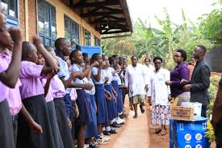
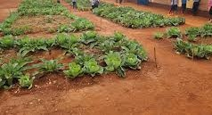
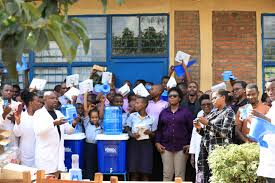
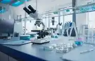
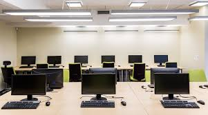

About our school
MISSION
Ntare Louisenlund School (Rwanda) aims to be the best school
in Africa. With the Rwandan plus-STEM programme, it will bring
together the best talents from Rwanda in the fields of mathematics,
computer science, natural sciences and technology and act as a hub
for training innovation and entrepreneurship and for shaping the
future. The aim of Ntare Louisenlund School is to provide students
with an outstanding international education, allowing them to apply
for scholarships at the best universities worldwide. Half of the student
body will be selected through a preliminary assessment and financed by
appropriate scholarships (plus-STEM stream). The other half of the
student body will be made up of students from across Africa and from
wider global community who wish to complete an international school
diploma in a strong learning community. Applicants from Rwanda and
the international community are welcome
Ntare Louisenlund School (Rwanda) aims to be the best school in Africa. With the Rwandan plus-STEM programme, it will bring together the best talents from Rwanda in the fields of mathematics, computer science, natural sciences and technology and act as a hub for training innovation and entrepreneurship and for shaping the future. The aim of Ntare Louisenlund School is to provide students with an outstanding international education, allowing them to apply for scholarships at the best universities worldwide. Half of the student body will be selected through a preliminary assessment and financed by appropriate scholarships (plus-STEM stream). The other half of the student body will be made up of students from across Africa and from wider global community who wish to complete an international school diploma in a strong learning community. Applicants from Rwanda and the international community are welcome
THAT MAKE AS UNIQUE

🌄Our morning asymbol
This is the one of our school that make as unique from many school.
It help our student to renew their maind through the song and dancing at the eary morning.

🥦Our vegetable graden
Our school has the also the uniqueness of having the gaden contain 60% of the vegetables.
That vegetables helps for feeding the blanced diet atthe school

🎓Our success
Our school has the uniqueness for student succession for the nation examinations and assessment .
Isn't for test only bout also we awarded for many action such as synitation and hygien.

📊GRAPH REPRESENT SUCCESS LEVEL
for pre-primary(nursary) all student succed 100%.
It is good marks for evry student so pre-primary is avairable

🔬For labo
This the lab for research and making practice .
That make us uniqe and perfect

👨💻Computer lab
In this comp lab every student get more skills about computer.In our comp lab every
student get free access on his/her own pc
OUR Staff